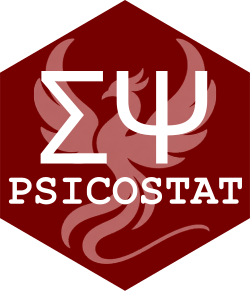
Evocare gli agents
l’AI che fa magie nel vostro computer,
poi qualcosa su gptEdu e sulle skills
4 novembre 2026
Accio, ordine!
🪄 1.270 file
Ho più di mille documenti nel Download. Esaminali, riconosci i diversi tipi, rinominali in modo coerente e organizzali in sottocartelle. Individua i duplicati e lascia i casi dubbi da verificare. Non cancellare nulla.
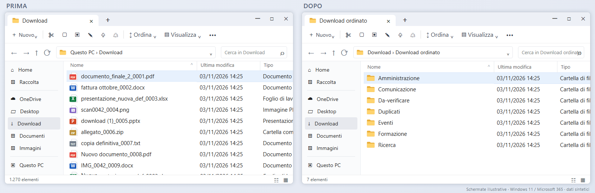
1051 classificati · 40 duplicati · 179 da verificare · nessun file cancellato
Accio, PDF!
🪄 600 iscritti
Ho 600 iscritti nel modulo di iscrizione del convegno. Vedi le ricevute di pagamento e controlla chi ha già pagato. Dai registri della segreteria vedi chi si è effettivamente presentato. Quindi prepara gli attestati di partecipazione in PDF in A4 per tutti quelli in regola
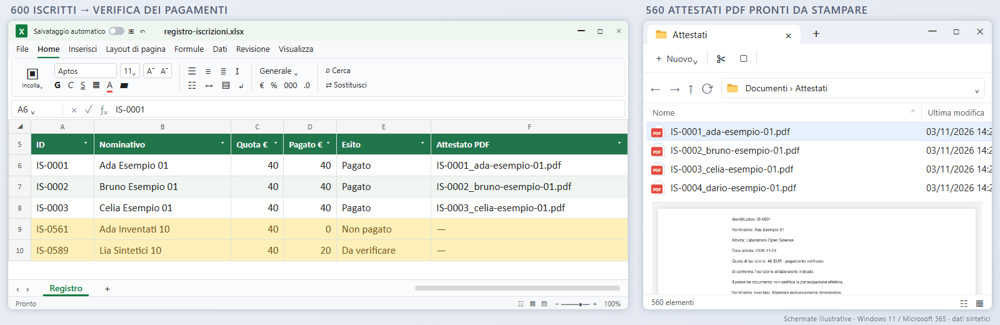
560 attestati PDF pronti da stampare · 28 pagamenti mancanti · 12 casi da verificare
Accio, Excel!
🪄 350 documenti
Ho 350 documenti di segreteria e organi del dottorato. Trova tutte le informazioni relative a spese e finanziamenti. Prepara un Excel con importi, date, finalità e riferimento preciso al documento originale
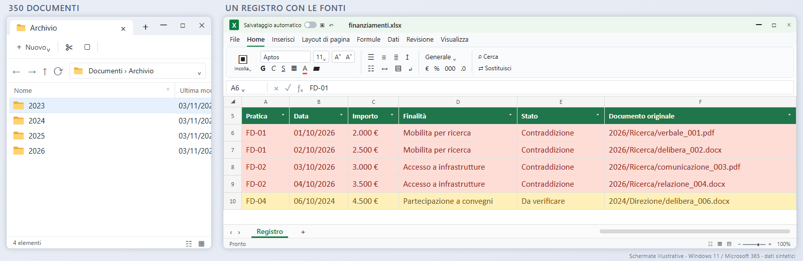
Un Excel con 24 decisioni e le fonti · 4 righe discordanti · 3 da verificare
Accio, burocrazia!
🪄 200 documenti
Devo compilare una relazione triennale sugli eventi svolti secondo il modulo fornito. Le informazioni sono sparse nei vari documenti che ho raccolto dentro questa cartella e in parte nella mia mail e negli allegati. Recuperale, compila direttamente il modello Word mantenendo la sua formattazione originale e segnala quello che manca, che è dubbio, o che richiede una mia decisione
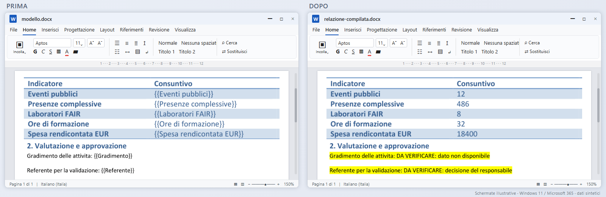
Il modello è compilato, con le stesse tabelle e gli stessi stili · 2 campi da verificare
Accio, sito aggiornato!
🪄 150 pagine web
Questo sito ha molte pagine. Aggiorna all’anno accademico corrente con le informazioni pertinenti in base ai documenti forniti, correggi i link interni non funzionanti e preserva l’archivio storico a parte. Poi ricostruisci il sito e guarda che tutto funzioni.
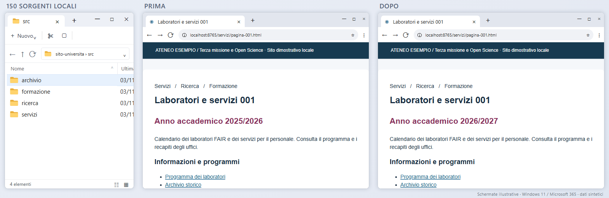
80 pagine aggiornate · 45 link corretti · build verificata · 30 pagine storiche intatte
Accio, R!
Anche per un semplice script R un agent che opera localmente aiuta molto
in chat
prompt→alleghi file→chat risponde→incolli in RStudio→R esegue→errore→copi l’errore in chat→…→rialleghi file aggiornati→chat risponde→…
con un agente
prompt→legge→scrive→esegue→sbaglia→corregge→…→verifichi
voi entrate all’inizio e alla fine, intanto vi fate un tè
🕯️ La cartella locale come centro di comando
Un “progetto” di solito è sparso in:
- tanti file sul vostro computer
- le decisioni sono testimoniate nelle email
- varie versioni condivise su Drive
- le scadenze stanno nel calendario
Il collante, finora, era la nostra memoria.
Con i connettori l’agente vede tutto insieme: cartella + posta + calendario + Drive (+ il browser, con Claude in Chrome).
Mail, eventi e condivisioni partono solo col vostro clic.
AGENTS.md può mappare quello che sta "fuori" dal contesto locale: le cartella di Drive pertinente, il calendario, le parole chiave nelle mail, i nomi dei collaboratori...delegare agli agents: Catalogo Open Science DPG
delegare agli agents: un videogioco
delegare agli agents: il vostro browser
Lo stesso agent può anche aprirsi il vostro Chrome e usarlo
🖥️ l'agent, sul vostro PC
Claude Code o Codex: legge il prompt, decide il prossimo passo, e intanto può lavorare anche sui vostri file🧩 l'estensione, in Chrome
gli fa "vedere" la pagina (screenshot e struttura) ed esegue i suoi clic e quello che scrive🌐 i siti, con i vostri login
lavora in schede sue, bordate di arancione: potete guardarlo o fermarlo; prima di pagare o inviare chiede- Chrome aperto, con attiva l'estensione del vostro agent, collegata allo stesso account. Poi:
- se usate Claude Code: Claude in Chrome (lo propone lui alla prima richiesta, o con
/chrome) · guida - se usate Codex: l'estensione Codex, dall'app desktop (Impostazioni → Computer Use) · guida · disattivato con l'account GPT Edu di ateneo
- se usate Claude Code: Claude in Chrome (lo propone lui alla prima richiesta, o con
- poi basta chiederlo a parole: «Vai sul sito di Trenitalia e trovami...» (vedi esempio nella prossima slide)
Accio, treno!
🪄
Vai sul sito di Trenitalia e trovami il Frecciarossa più economico da Padova a Roma per venerdì 13, di mattina. Fermati prima del pagamento.
altro dove gli agents aiutano
personali
didattica e app
edizioni e documenti
TRE COSE SULL’AI
enricotoffalini.github.io/blog/posts/serie-ai
cose minime da imparare per usare l’AI nel nostro lavoro (secondo me)
Claude Code e Codex: stessa richiesta, due agenti, terminale o app
installazione
Claude Code
# Windows (PowerShell)
irm https://claude.ai/install.ps1 | iex
# macOS / Linux
curl -fsSL https://claude.ai/install.sh | bash
# alternativa: npm (tutti i sistemi)
npm install -g @anthropic-ai/claude-codeserve almeno Claude Pro
Codex
# Windows (PowerShell)
powershell -ExecutionPolicy ByPass -c `
"irm https://chatgpt.com/codex/install.ps1 | iex"
# macOS / Linux
curl -fsSL https://chatgpt.com/codex/install.sh | sh
# alternativa: npm (tutti i sistemi)
npm install -g @openai/codexincluso in ChatGPT Edu e Plus
Per l’opzione npm: installate prima Node.js LTS (include npm).
claude --version / codex --version. Se non va: claude doctor.tasto destro → apri nel terminale → claude o codex ↵
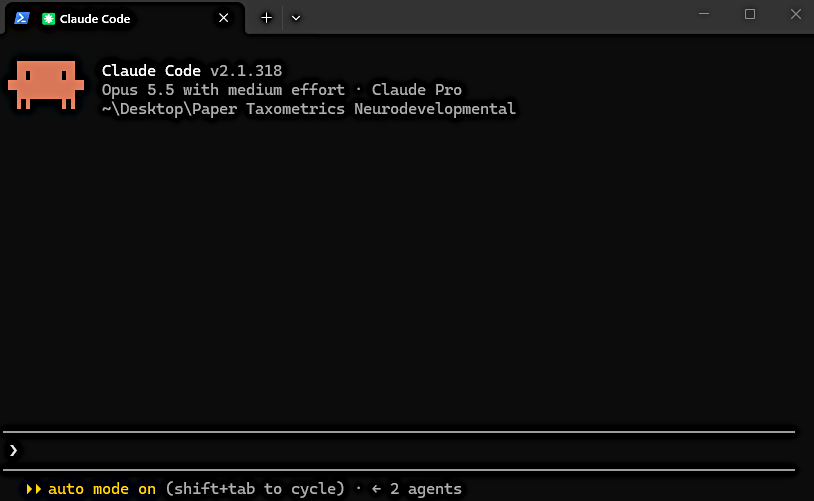
in alto: modello, effort, piano e cartella di lavoro. Da qui in poi si scrive in italiano
la richiesta
dati simulati della BII, una batteria inventata per la didattica (1.600 casi, 6-22 anni)
- legge i CSV e il
LEGGIMI.md, sceglie il metodo - scrive
analisi.R - lo esegue con il vostro R
- vi spiega i risultati
Claude Code: 52 secondi
Codex: 2 minuti, stesse stime
si vede tutto: Ran Rscript analisi.R, l’output, Viewed image punteggi_eta.png (ha guardato il grafico che ha prodotto)
e poi: “fammene un report Quarto”
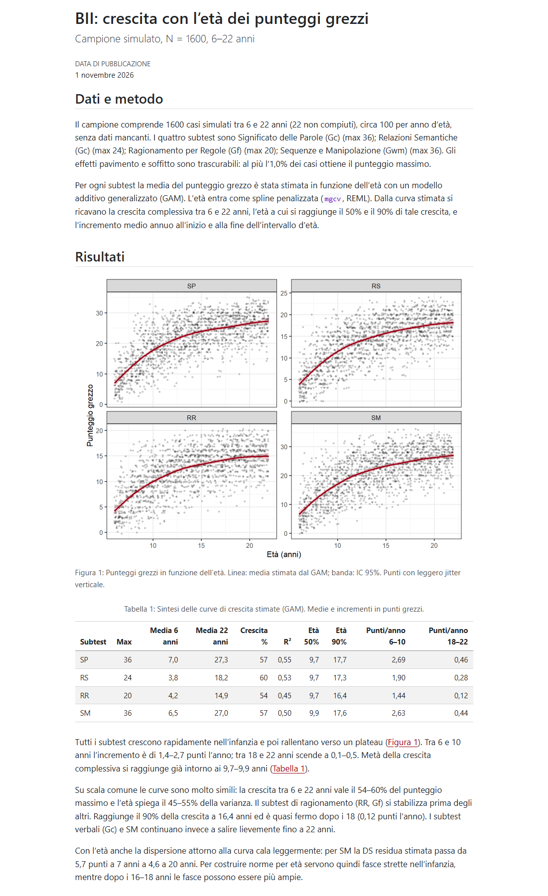
Claude Code
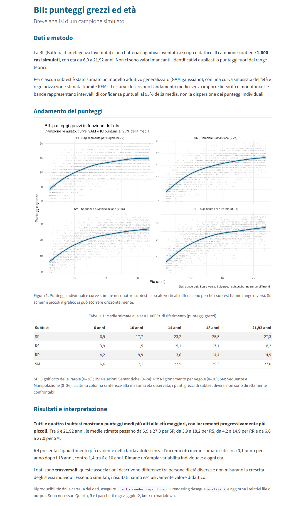
Codex
non piace il terminale? stessa cosa dall’app desktop
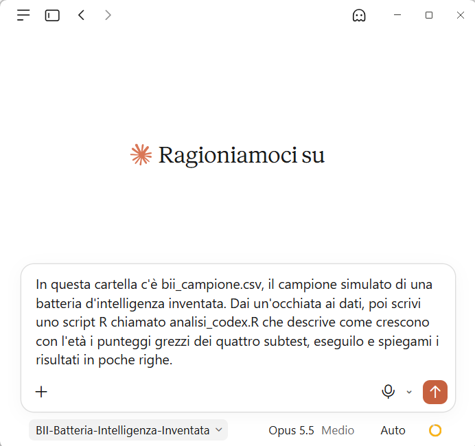
app Claude, scheda Code: cartella, modalità, modello sotto la casella
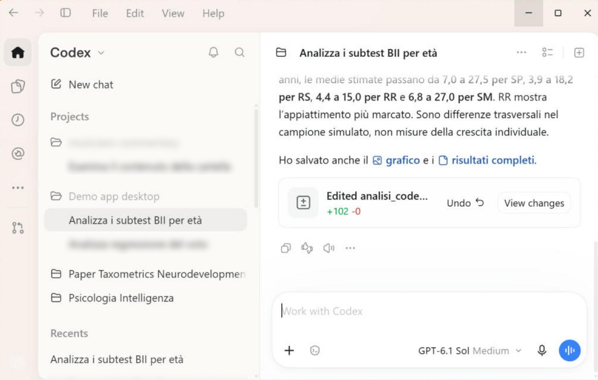
app ChatGPT, sezione Codex: stessa richiesta, stesso risultato
- stesso lavoro in locale, stesse skill
- ogni volta si sceglie la cartella (in Codex: un progetto)
L’app ha un browser in cui controlla quello che fa
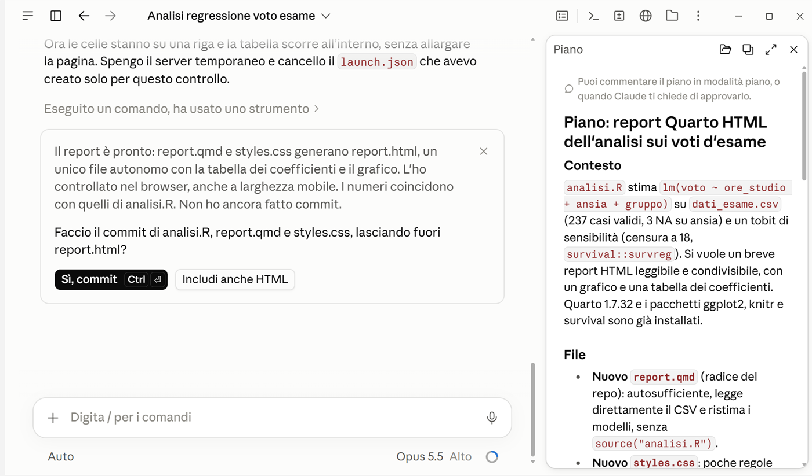
Claude: report controllato nel browser integrato, anche a larghezza da cellulare; il commit si approva con un clic
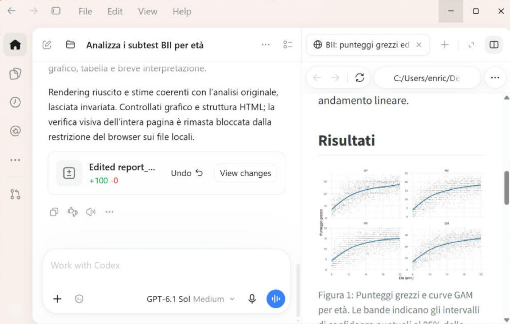
Codex: il report accanto alla chat
Io preferisco il terminale: non apro l’AI chiedendomi “cosa facciamo oggi?”, la chiamo al bisogno dentro la cartella in cui sto già lavorando
da sapere n. 1: prima il /plan
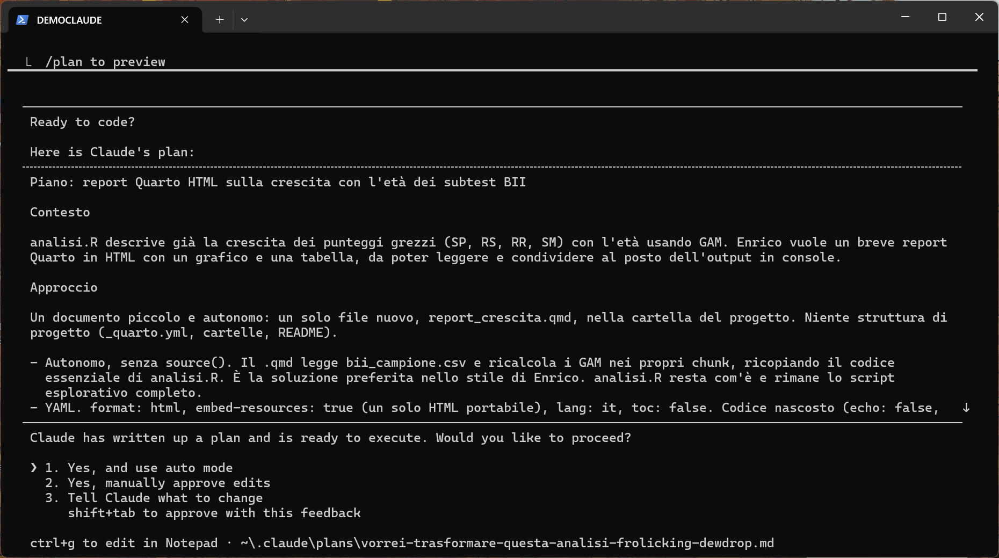
Claude Code, modalità plan (Shift+Tab)
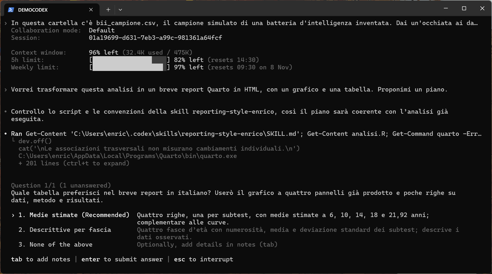
Codex, /plan o (Shift+Tab): prima di decidere fa domande
da sapere n. 2: prima di fare, spiegami
35 secondi · solo lettura
Claude Code, trascrizione accorciata ? repository del videogioco ?
da sapere n. 3: decidete voi quanta autonomia
Claude Code: Shift+Tab nel terminale, menu in basso nell’app
- Manual: chiede prima di ogni modifica o comando
- Auto: fa da sé; un secondo modello blocca le azioni rischiose
- Accept edits on: modifica i file, chiede per i comandi
- Plan: legge e propone un piano, non modifica nulla
Codex: /permissions nel terminale, menu in basso nell’app
- Ask for approval: chiede solo per internet e file esterni
- Approve for me: fa da sé; chiede solo per le azioni rischiose
- Full Access: nessun limite, anche fuori dalla cartella e in rete
- Read Only: legge, chiede prima di modificare o andare in rete
- (
/planper pianificazione senza modifiche è attivato a parte)
Esc interrompe l'agente.leggete il riepilogo finale
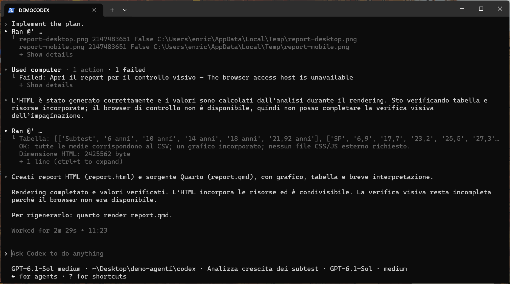
Codex: render riuscito, valori verificati, ma “la verifica visiva resta incompleta” (browser non disponibile). E infatti nel report è rimasto et<U+00E0>
da sapere n. 4: alzate il ragionamento quando serve
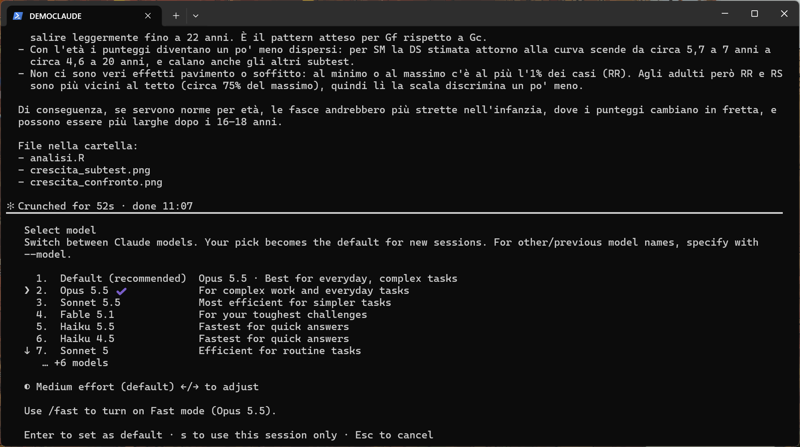
Claude Code, /model: ↑↓ modello, ←→ effort
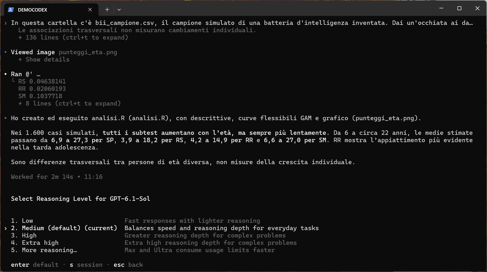
Codex: da Low a Extra high, più Max e Ultra
- Codex:
/model - Claude:
/modeled/effort
modelli ed effort: due scelte diverse
Aggiornato al 2 novembre 2026 · Modelli e livelli disponibili dipendono da piano, versione e amministratore. Fonti: OpenAI · Anthropic.
| Claude Code | Codex | In poche parole |
|---|---|---|
| Fable 5.1 | GPT-6 Astra | Modelli di punta |
| Opus 5.5 | GPT-6.1 Sol | Vicini a modelli di punta, ragionamento anche molto complesso; raccomandati come base per uso agentico quotidiano che vada oltre domanda-risposta o compiti “meccanici” |
| Sonnet 5.5 | GPT-6.1 Terra | Versatili e rapidi per compiti non troppo complessi |
| Haiku 5.5 | GPT-6 Luna | Leggeri ed economici: compiti semplici, modifiche mirate |
Effort, in tutti i casi: Low < Medium < High < Extra high / xhigh < Max.
- Medium è l’effort che raccomando sempre di base.
- Nell’app Codex Low può chiamarsi Light.
Sottoagenti: Claude li lancia già da Medium; Codex su richiesta o a livello Ultra. In Claude, Ultracode pianifica workflow con sottoagenti su larga scala.
da sapere n. 5: guardate quanto usage vi resta
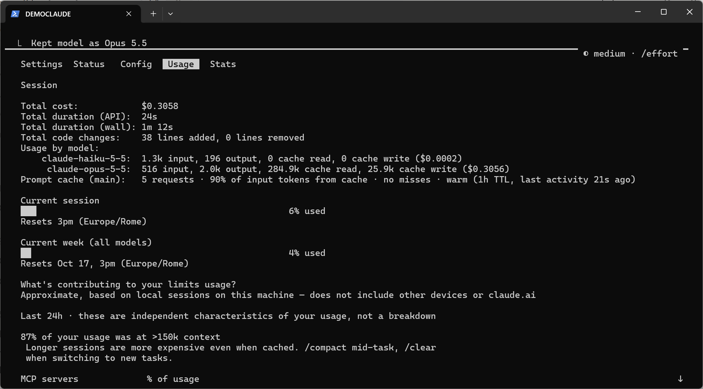
Claude Code, /usage: finestra di 5 ore e settimana
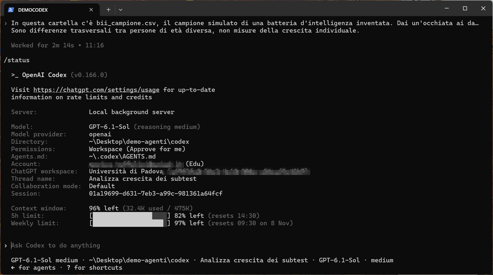
Codex, /status: account, contesto usato, limiti
Una sessione per compito, please. Cambio argomento?
/clear (Claude) o /new (Codex).da sapere n. 6: resume riprende una conversazione
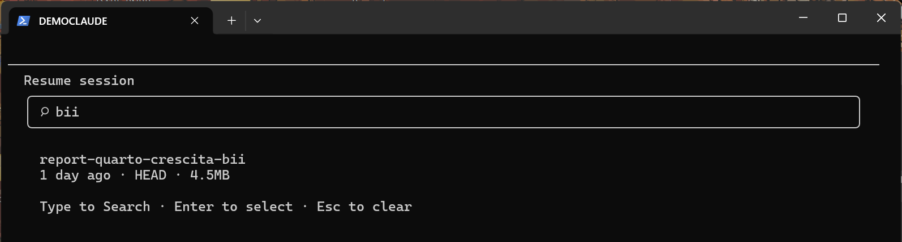
Claude Code, claude -r: conversazioni della cartella, con ricerca
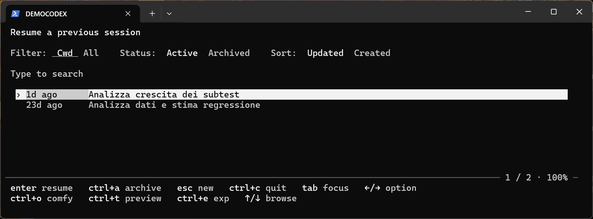
Codex, codex resume: elenco, filtri e anteprima
resume dalla stessa cartella e ripartite con tutto il contesto:
- l'ultima:
claude -cocodex resume --last - una a scelta:
claude -r/claude --resumeocodex resume(dentro una sessione:/resume)
il prontuario
| Claude Code | Codex | |
|---|---|---|
| interrompere | Esc |
Esc |
| piano prima di agire | Shift+Tab → plan |
Shift+Tab o /plan |
| modello e ragionamento | /model, /effort high |
/model |
| quanto mi resta | /usage |
/status |
| nuova conversazione | /clear |
/new |
| riassumere e liberare contesto | /compact |
/compact |
| riprendere dopo un limite o una chiusura | claude -c, claude -r |
codex resume --last, codex resume |
| tornare indietro, anche nel codice | /rewind |
(Git) |
| file di istruzioni del progetto | /init → CLAUDE.md |
/init → AGENTS.md |
| un comando del terminale al volo | !git status |
Digitando / compare l’elenco completo. Nelle app: gli stessi comandi, o i menu sotto la casella.
da sapere n. 7: un AGENTS.md sintetico nella cartella
# AGENTS.md
## Progetto
Articolo su interazioni e potenza statistica.
Analisi in R/, manoscritto in paper/main.qmd.
## Fuori dalla cartella
- Mail: etichetta "Interazioni-2026"
- Drive: cartella "Interazioni - condivisa"
## Regole
- Non modificare data/raw/.
- Render: quarto render paper/main.qmd
- Stato del lavoro: vedi NOTES.mdesempio illustrativo
- oppure
CLAUDE.mdse esclusivamente per Claude - istruzioni di contesto, convenzioni da seguire
- letto sempre all’avvio (⚠️ occupa contesto)
- lo stato del lavoro può essere aggiornato qui
- nuova sessione = memoria azzerata:
AGENTS.mdè l’unico elemento di contesto alla partenza
/init ve ne scrive una prima bozza. Poi la correggete voi.
AGENTS.md come mappa (quale cartella di Drive, quale calendario, cosa cercare nelle mail, chi sono i collaboratori...)
da sapere n. 8: formati aperti
.qmd · .R · .csv · .bib
legge → cambia una riga → fattocon Git si vede e si annulla
.docx · .xlsx · .pptx · .sav
estrai → modifica → ricomponi → controllapiù tempo, più consumo, più errori
FAIR per gli umani, FAIR per l’AI.
istruzioni per l’uso (e per non sprecarlo)
Chat o Work? di default, Chat
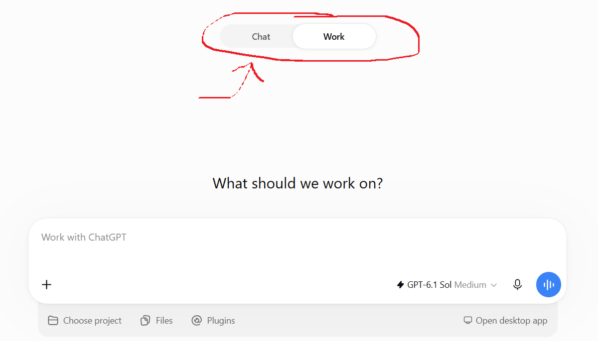
il selettore Chat / Work in alto; qui la modalità Work
la cosa più importante: il livello di ragionamento
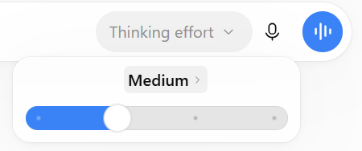
Medium: il default
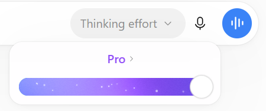
Pro: all’estremo destro
| Livello | Quando |
|---|---|
| Instant | riformulazioni, traduzioni semplici |
| Medium | la maggior parte delle richieste |
| High | statistica, codice, revisione critica: nel dubbio, questo |
| Pro | problemi davvero difficili; lento e contingentato |
in Chat, High senza scrupoli
nella mia esperienza con ChatGPT Edu
- i limiti si sentono in Work (sono quelli di Codex: 5 ore + settimana)
- e soprattutto con Thinking Effort: Pro (in un periodo: 16 richieste al mese)
il +: ricerca web e Deep research
- Web search: fonti aggiornate, con link
- Deep research: lavora per minuti, consulta decine di fonti, restituisce un report con citazioni
scrivete @: i connettori
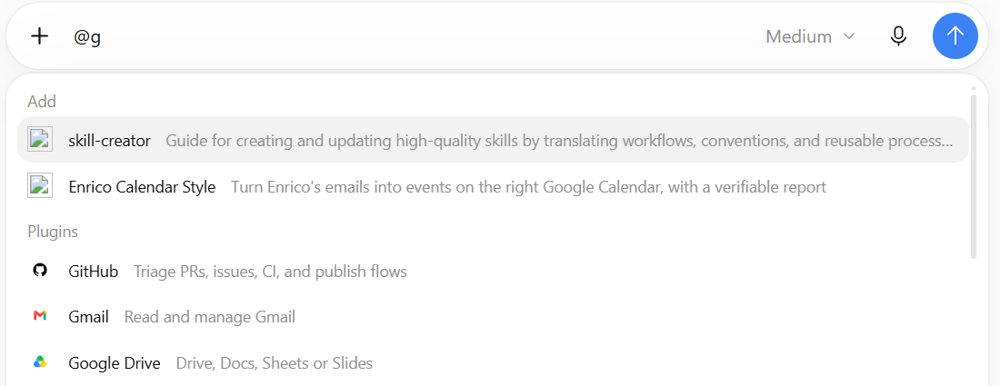
digitando @ compaiono skill e plugin collegati (qui filtrati con “g”)
dove si attivano: la pagina Plugins
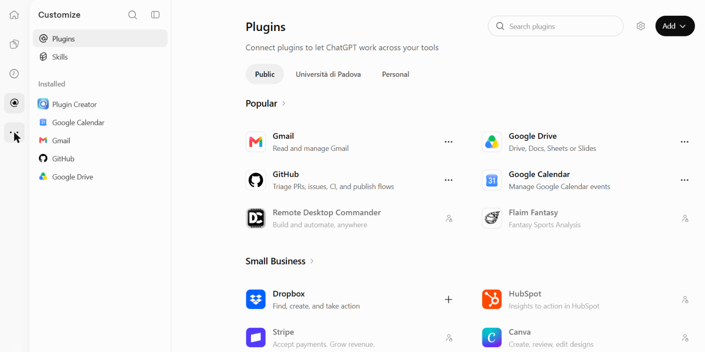
a sinistra quelli installati, a destra il catalogo
progetti: contesti delimitati con fonti e istruzioni
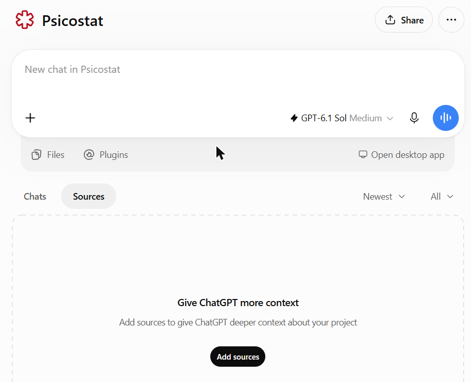
fonti ancora vuote: un’occasione sprecata
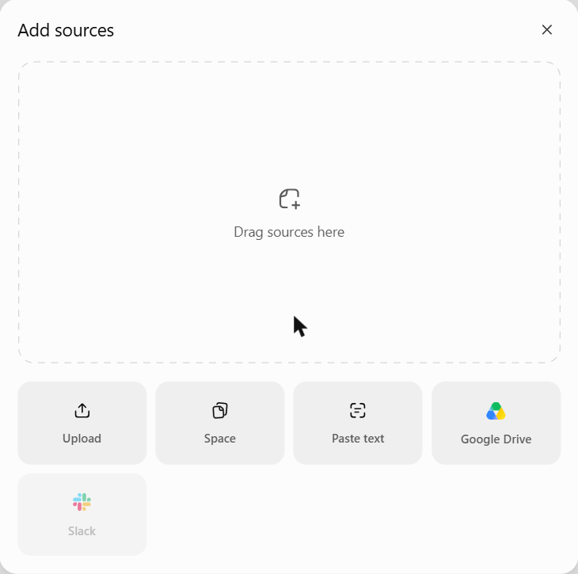
Add sources: file, testo, Drive
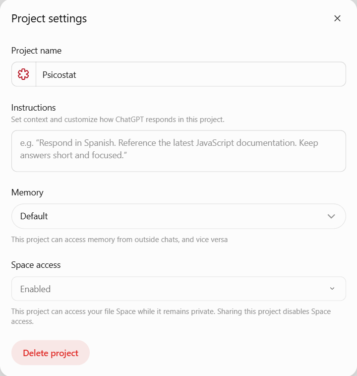
Project settings: istruzioni e memoria separata
per andare oltre
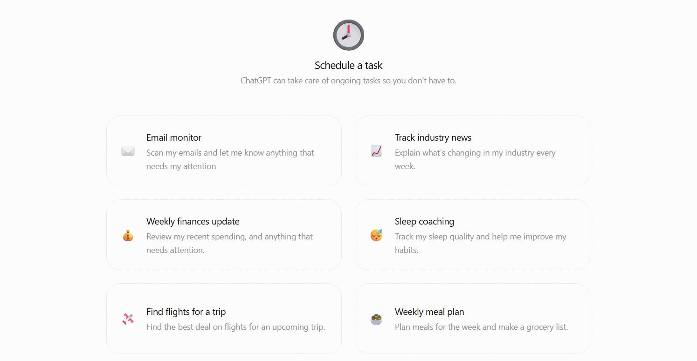
attività pianificate: la stessa richiesta a intervalli regolari
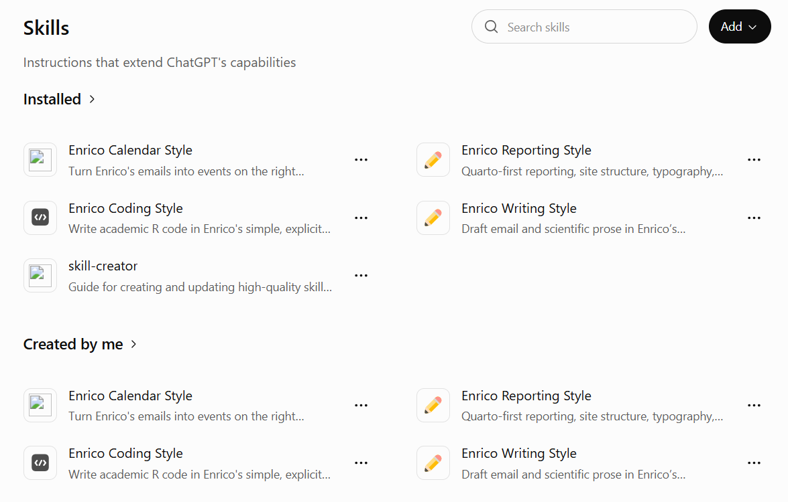
skill: le stesse di Codex e Claude (→ parte 3)
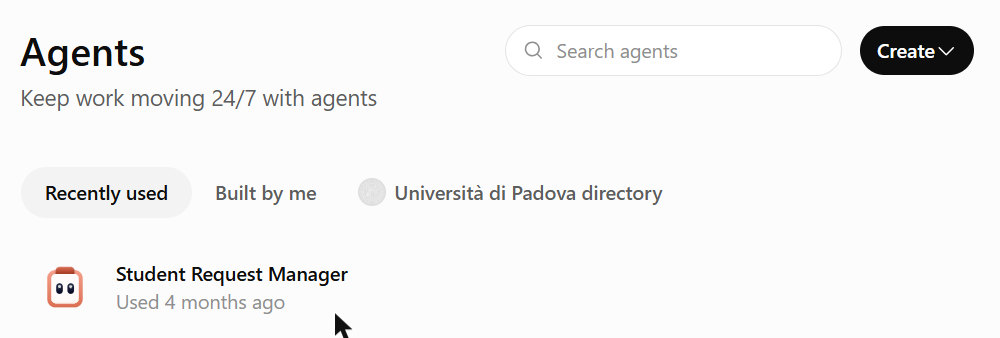
agenti condivisibili nella directory di ateneo
e soprattutto: Edu include Codex
Codex per sviluppare progetti.
- stesso login di ChatGPT Edu:
codex→ Sign in with ChatGPT - tutto quello della parte 1, con il vostro account di ateneo
- il browser per Codex, con Edu, è disattivato dall’ateneo
come smettere di correggere sempre le stesse cose
vi suona familiare?
senza skill: otto pacchetti tidyverse, anche se voi non li usate e manco vi piacciono (eccetto ggplot2 ❤️)
library(tidyverse)
pubs <- read_csv("data/publications.csv")
pubs %>% mutate(open_data = str_detect(practices, "open_data")) %>%
group_by(year) %>%
summarise(n = n(), quota = mean(open_data)) %>%
ungroup()
con la mia skill sul codice “coding-style-enrico”
il modello non sbaglia: vi dà la risposta “media”
| senza skill (risposta “media”) | con skill personalizzata | |
|---|---|---|
| codice | preferenza per python, in R usa tidyverse, funzioni e controlli ovunque, fortemente ingegnerizzato | preferenza R base, dall’alto in basso, naive ma leggibile |
| report | un HTML bellissimo, sorgente chissà | Quarto, forever |
| tre righe di convenevoli | subito al punto | |
| calendario | “ho creato un evento”: inserisce attività generica con nome troppo lungo | il calendario giusto con le convenzioni giusti |
cos’è una skill
- una cartella con un
SKILL.md - in testa: nome e descrizione (quando usarla)
- sotto: regole, in testo libero
- accanto: riferimenti, modelli, script
- standard aperto: Claude e ChatGPT/Codex, chat e agenti
perché se ne possono avere tante
Cosa finisce caricato nel contesto
SKILL.md completo solo se la richiesta corrispondereferences/, scripts/, ecc. se servonoskill, istruzioni, memoria: cosa cambia
| vale per | limite | |
|---|---|---|
| istruzioni personalizzate | tutte le conversazioni | brevi e generiche; sempre attive |
| memoria automatica | tutte le conversazioni | decide l’AI cosa ricordare |
istruzioni di progetto (progetti su chat, AGENTS.md per agents) |
un progetto | da scrivere per ogni progetto |
| skill | un tipo di compito | da scrivere con cura una volta sola |
🪄
Avevo chiesto solo “un breve report”: Codex si va a leggere da solo la mia skill sui report.
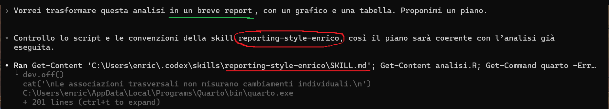
da terminale: Ran Get-Content … reporting-style-enrico/SKILL.md
lo stesso, dall’app
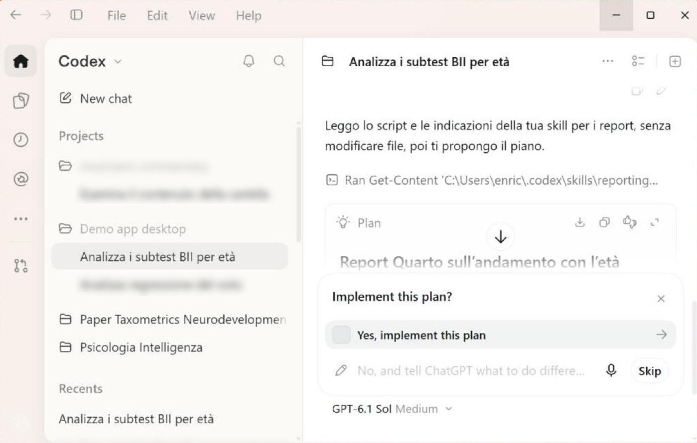
prima la skill (riga Ran Get-Content … SKILL.md), poi direttamente il piano: stavolta nessuna domanda
dove si mettono
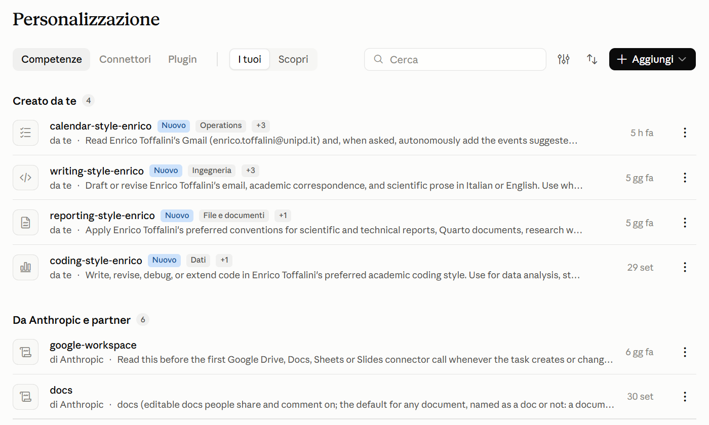
Claude, Personalizzazione → Competenze

ChatGPT Edu, pagina Skills, poi @
| strumento | cartella delle skill |
|---|---|
| Claude Code | ~/.claude/skills/ (tutti i progetti) · .claude/skills/ (un progetto) |
| Codex | ~/.codex/skills/ · vale anche per l’app |
/nome-skill o @.oltre lo stile: condensare un’expertise
---
name: cfa-lavaan
description: Run and report CFA and measurement
invariance in R with lavaan. Use when the user
asks to fit or report CFA models, test
invariance across groups, or check the factor
structure of a questionnaire.
---
- Ordinal items (< 5 categories): WLSMV,
ordered = TRUE. Otherwise MLR + FIML.
- Report chi-square, CFI, TLI, RMSEA (90% CI), SRMR.
- Never add residual covariances only to
improve fit without a justification.
For reporting tables, read references/reporting.md.Altre idee per il lab:
- potenza via simulazione, secondo uno schema
- scoring di uno strumento, con le norme
- meta-analisi, dalla codifica al forest plot
- revisione di manoscritti con una checklist
- quiz importabili su Moodle
- procedure di tesi e tirocini
scriverne una: sei cose da sapere
- partite da una frustrazione, non da un documento completo
- curate la descrizione: cosa fa e quando usarla
- concreti: “usa
=per l’assegnazione”, non “scrivi codice chiaro” - dite anche cosa non fare (“non cancellare mai eventi”)
SKILL.mdcorto; i dettagli in file a parte- fatevi aiutare: skill-creator, oppure date all’agente il vostro codice o le vostre email e chiedete di ricavarne le convenzioni, o di intervistarvi
le mie, da cui partire
github.com/EnricoToffalini/ai-skills · codice, report, scrittura, calendario, FAIR check
Personali (alcune personalissime: gli ID dei miei calendari). Non copiatele così come sono: usatele come modello. E le skill altrui leggetele prima: girano con i vostri permessi.costi, precauzioni e da dove partire
quanto costa
- ChatGPT Edu (UniPD): ~8.6 € al mese, Codex incluso
- ChatGPT Plus: ~20 $ + IVA al mese, Codex incluso
- Claude Pro: ~22 € al mese, Claude Code incluso
- limiti su 5 ore e sulla settimana; poi l’agente si ferma
- per me una finestra di 5 ore basta per parecchi compiti
ottobre 2026; cambia spesso
- Se potete, fatevi dare licenza GPT Edu! e iniziate con Codex.
- Volete (anche) pagare di tasca vostra? Secondo me, Claude Pro.
precauzioni
- Git, o almeno una copia: l’agente può cancellare file
- dati sensibili: quello che legge va sui server del fornitore (piani per aziende tipo GPT Edu danno garanzie)
- autonomia graduale: prima piano e approvazione, poi il resto
- skill e connettori altrui: leggerli prima (girano con i vostri permessi)
- responsabilità: codice che gira ≠ numeri giusti
domani mattina
- terminale in una cartella di progetto (meglio se con Git), poi
codexoclaude - prima un piano; poi leggete cosa fa
- un
AGENTS.mddi tre righe: cosa c’è, cosa non toccare, come si fa il render - ChatGPT Edu: Chat a High, @ per i connettori, progetti con fonti
- terza volta che correggete la stessa cosa? skill
per saperne di più
Open Science DPG · guide passo-passo a Claude Code, Codex e app desktop
Memory & Learning · Lab meeting · 4 novembre 2026